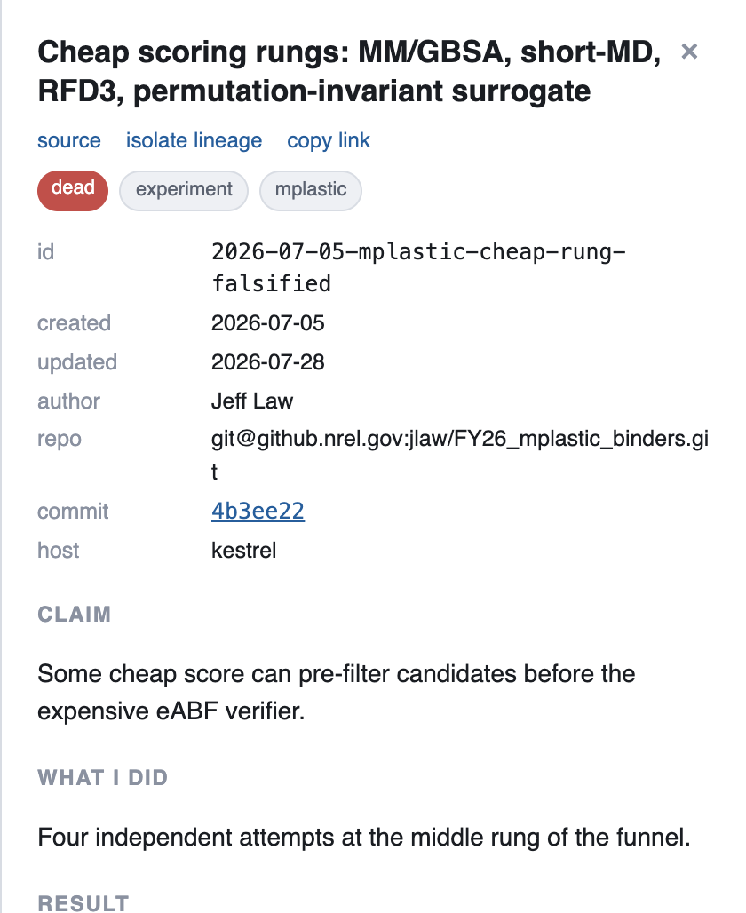
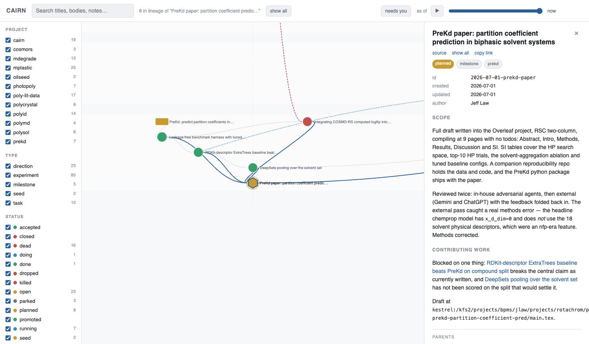
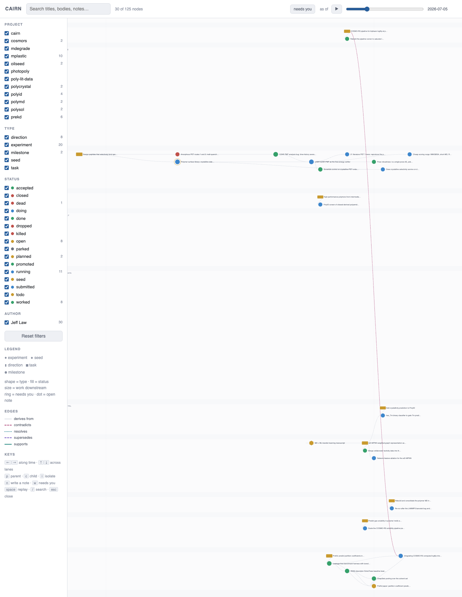

The map
One file. No server.
build/graph.html is a single self-contained file — no
server, no CDN, no build step beyond make build. You open it from
disk, and it is a full interactive app.
Time-ordered, not force-directed #
x is the creation date, y is a project lane. Research history has a real time axis and a force layout throws it away. It also means node positions are stable between builds, so the map becomes memorable — you learn where things are.
The green/red ratio in a lane is the honest picture of a project, readable from across the room.
The whole graph #

Click a node #
The panel renders the body, resolves the commit to a clickable link, lists
parents and children you can navigate, and links the markdown source.
author is derived from git log --diff-filter=A, never
stored in a field.

The dead end, six months later, still saying why
- Four cheap scoring rungs, each falsified, each with the number that falsified it — including a correlation of 0.80 against the reference implementation, so the implementation was right and the idea was wrong.
- That distinction is the whole value. It's the difference between “try MM/GBSA again” and “MM/GBSA is anti-correlated here; don't.”
- This node is why the funnel has two rungs instead of three — and it's where a fifth attempt at that rung got recorded too, so the rung stays closed.
Isolate lineage #

The view that makes a methods section writable
Click a milestone and the graph collapses to its full ancestry and descent: every experiment that fed the paper, dead ends included. No special edge type is involved — a milestone is just a node with high fan-in.
This one does something better than documentation. The panel names what blocks it: a simple descriptor baseline that beats the model on the compound split, which breaks the paper's central claim as currently written, and a pooling run that hasn't been scored on the split that would settle it.
That threat was found by an external review pass and would otherwise live in a chat log. Here it's a typed edge pointing at a paper, and it will still be pointing at it next month. Same mechanism, second use: annual reviews.
Replay the history #
Because history is an event log, replay is free: drag the “as of”
slider back and nodes disappear, statuses revert, and the panel follows. No
snapshots, no bookkeeping.
▶ plays it, which is the difference between a
control and an animation: nobody drags a slider to watch a shape change, and
the animation is what makes five months legible at once.

The graph knows what was known when
Today's status next to a three-months-ago graph is how you misread history, so the panel shows the status of the slider's date — not the current one.
Second replay for free: because the whole graph is in git, checking out an old commit and re-rendering replays the research history a different way, with no feature required.
“Needs you” is evaluated against the slider's date too, so “needs you as of June” means what it meant in June.
The live demo #
This is Cairn's own design record — the real subgraph of the project that
built it, with real dead ends, which no synthetic example can be. Click a node,
drag the slider, press / to search.
Generated by
make site-demo from a scrubbed, derived export. The
authoritative copies live in a private graph; if a claim here disagrees with
one there, there wins.Everything it does #
- hover a node → a card with its status, date and latest history note
- click → side panel: rendered body, clickable commit link, DOI links, parent/child links you can navigate, and a link to the node's markdown source
- isolate lineage → collapse to one node's full ancestry and descent
- typed relations → grey arrows are lineage; coloured dashed ones carry meaning, each with a one-line reason, backlinked so a contradiction is findable from both ends
- copy link → deep link to a node
(
graph.html#<node-id>) - needs you → collapse to what is actually waiting: a thread
whose status asserts activity but which has gone quiet, or a node carrying a
note nobody has answered. Same rule as
cairn standup - leave a note → type it in the panel and copy the exact
cairn notecommand to your clipboard - filter by project / type / status / author, search, pan, wheel-zoom
- URL params:
?since=YYYY-MM-DD,?project=<key>,#<node-id>
Keyboard
| ← ↑ → ↓ | walk the layout — x is time, y is a project lane |
| p / c | walk the edges — parents, children |
| i | isolate lineage |
| n | write a note |
| w | toggle needs-you |
| space | play the replay |
| / | search |
| Esc | close |
Why the note button copies a command instead of saving. The
page is file:// with no server by design, so it cannot write to
the repo — and a comment living in one browser's
localStorage, invisible from the other machine, is the exact
failure this whole project exists to avoid. Two keystrokes at a terminal and
the note is in the node body, in git, on both machines, where
standup and the next agent session both find it.
Two other ways to read it #
nodes/ is already an Obsidian vault, and nothing
had to be built for that. Node bodies refer to each other as
[[<node-id>]], which is Obsidian's own wikilink syntax — so
pointing Obsidian at the graph gives you backlinks, a local graph view,
full-text search and a mobile app, over the same files, in the same git remote,
with no export step.
Use Obsidian when you want to write; use the map when you want the time axis, the replay and the lineage view, which Obsidian knows nothing about.
build/graph.md is a Mermaid fallback that renders in GitHub, an
editor, or a terminal.